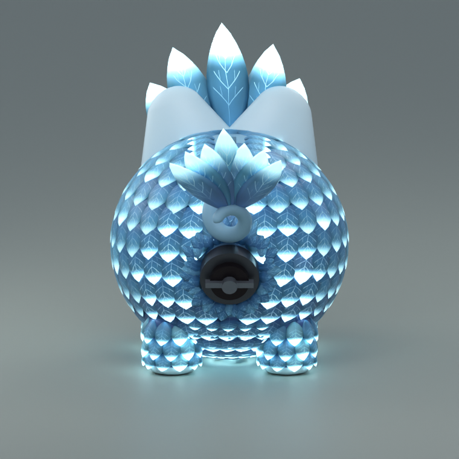
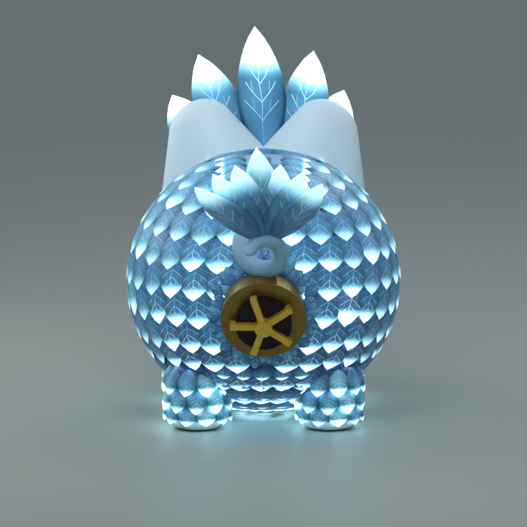
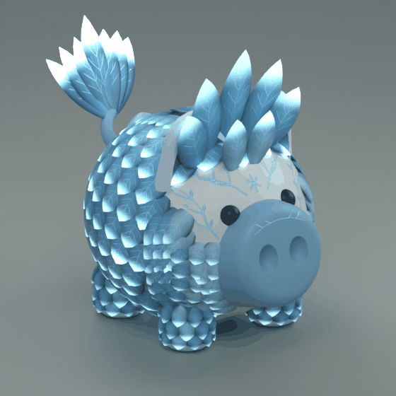
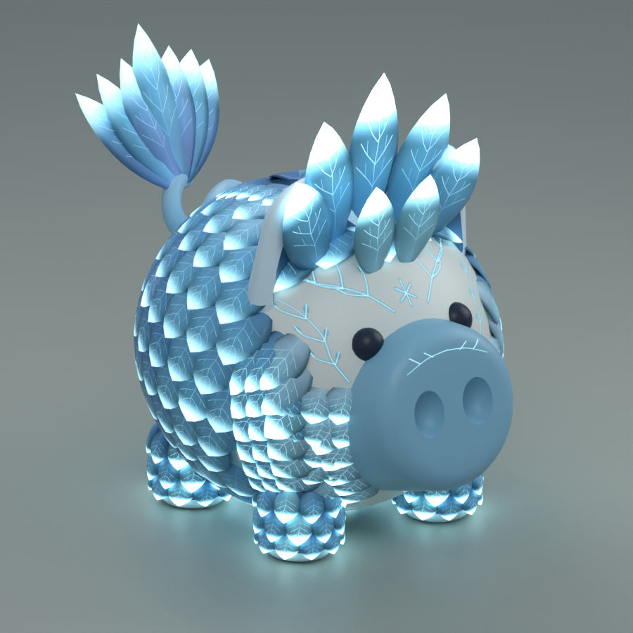
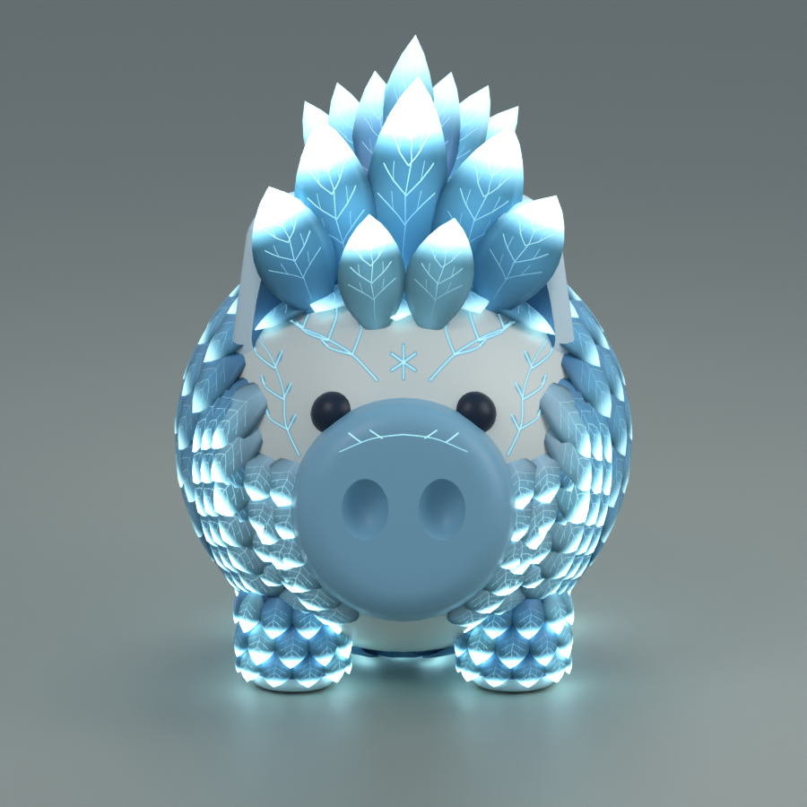
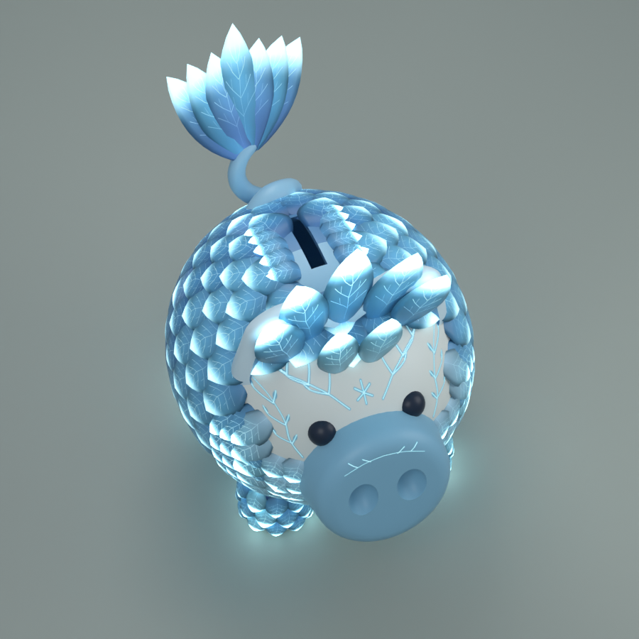
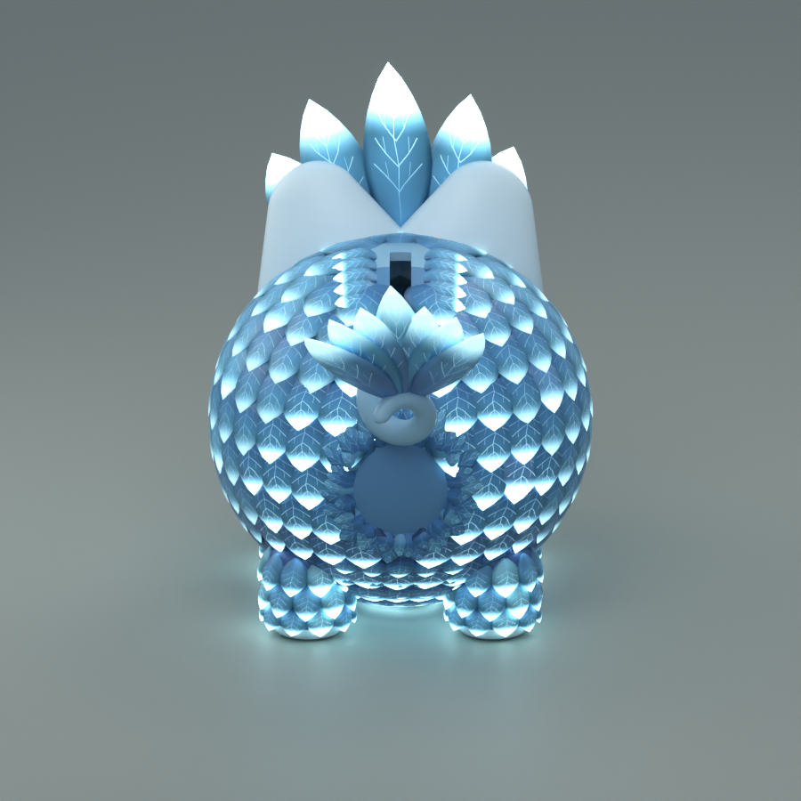
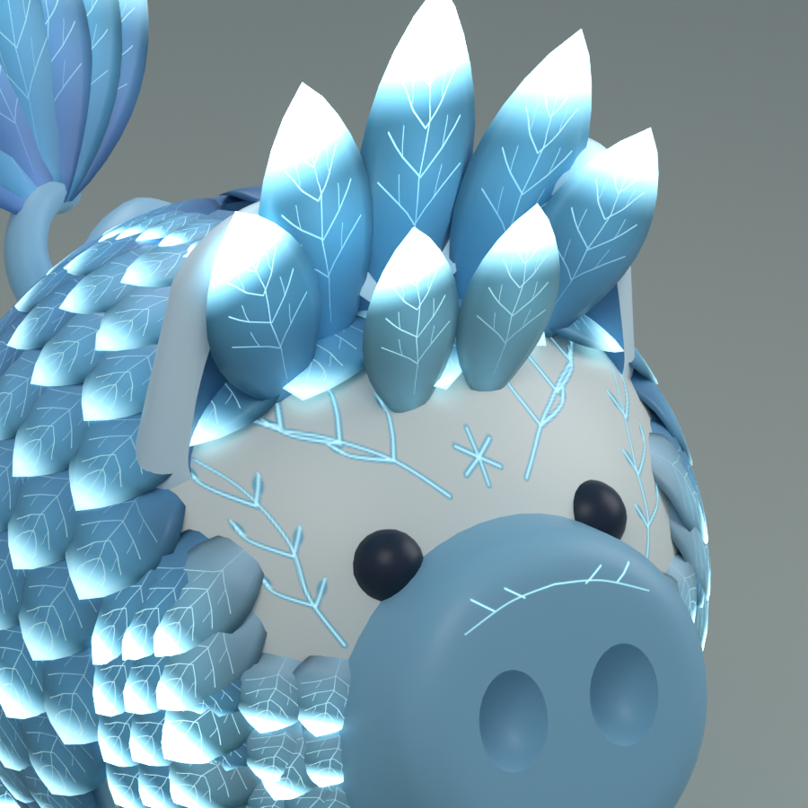

ANIMAL LEGENDARY · ICE PHOENIX
Ice Phoenix
Feathers seated into the skin, a seven-feather crown, frost face markings, 495 closely layered blue feathers, and cyan-white tips. The coat fills the back and snout sides, with rooted feather movement and a stronger cyan glow at the tips.
Vault fit — complete
The feathers meet the vault edge with no bare gap across all four sizes. Smallest and largest plates shown.


Selected Crystal Crown concept →
The model below implements the crown, frost-vein glow, facial markings and feathered legs.
Actual animation

22 meshes · 106,800 triangles · Studio integration pending
Model views




